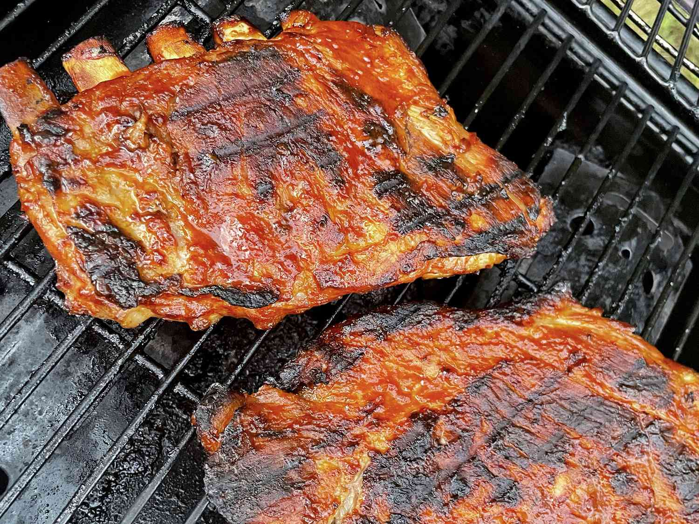

Description
These grilled BBQ ribs have a delicious smoky flavor that Southerners expect without all the grilling time. The ribs are baked, then grilled and basted with a homemade BBQ sauce for just 30 minutes.
Ingredients
- 4 pounds baby back pork ribs
- ⅔ cup water
- ⅓ cup red wine vinegar
- 1 cup ketchup
- 1 cup water
- ½ cup cider vinegar
- ⅓ cup Worcestershire sauce
- ¼ cup prepared mustard
- 4 tablespoons butter
- ½ cup packed brown sugar
- 1 teaspoon hot pepper sauce
- ⅛ teaspoon salt
Steps
- Preheat the oven to 350 degrees F (175 degrees C). Place ribs in two 10x15-inch roasting pans. Pour water and red wine vinegar into a bowl; stir to mix. Pour diluted vinegar over ribs and cover with foil. Bake in the preheated oven for 45 minutes. Baste the ribs with juices halfway through cooking.
- To make the BBQ sauce: Mix ketchup, water, vinegar, Worcestershire sauce, mustard, butter, brown sugar, hot pepper sauce, and salt together in a medium saucepan; bring to a boil. Reduce heat to low, cover, and simmer for 1 hour.
- Preheat grill for medium heat.
- Lightly oil preheated grill. Transfer ribs from the oven to the grill, discarding cooking liquid. Grill over medium heat for 15 minutes, turning ribs once. Baste ribs generously with BBQ sauce, and grill 8 minutes. Turn ribs, baste again with BBQ sauce, and grill 8 minutes.